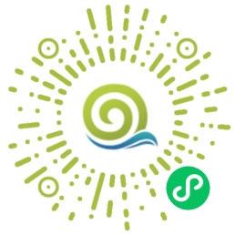

👏👏👏 欢迎大家！
- 你们好 🍮
- 很高兴在这里遇见每一位朋友。希望我的分享能够给你们带来一些帮助和启发。无论是技术探讨还是日常生活的点滴，我都乐于与你们交流。让我们一起学习、成长，享受这段旅程吧！
简介
- 👦 95后的内向小伙
- 来自广西百色市，一个非常非常偏远的山旮旯（阳光空气贼好🌴）。
- 那里虽偏僻，但阳光灿烂，空气清新。不太爱说话，但热爱生活中的每一份简单与美好。
职业
- 拥有多年Java后端开发经验的专业软件工程师
- 同时具备基础的前端开发技能与Linux运维知识，在成为高端全栈的路上，我正努力搬砖中
- 当个全栈不容易，但至少我学会了如何优雅地说‘稍等，让我查一下文档’。
- 地点：深圳
爱好
- 享受美食：对于我来说，没有什么比一块美味的肉更能治愈人心了。🍖
- 电影迷：在光影交错中寻找另一个世界的故事。
- 音乐爱好者：音符间流淌的是我对生活的热爱与感悟。
- 游戏探险家：虚拟世界的每一处角落都藏着待我发现的秘密。
技能
- Java
- SpringBoot、SpringCloud、SpringCloud-Alibaba、Maven、Git
- MySQL、Redis、Elasticsearch、Rabbitmq、RocketMQ
- Linux、Nginx、Jenkins、Docker
- Vue、HTML、JavaScript、CSS、JQuery
初衷
- 分享技术心得：希望通过分享工作中的技术经验和解决方案，帮助遇到类似问题的朋友，同时也期待与更多技术爱好者交流学习，共同成长。
- 记录日常工具配置：在日常工作中，我经常探索和使用各种工具来提高效率。通过记录这些工具的使用方法和个性化配置，不仅方便自己日后查阅，也希望为有需要的人提供参考。
联系
- QQ:1006059906
- Github: https://github.com/rstyro
结语
- 在这个忙碌的世界里，每个人都在为生活奔波，无非是为了那几两碎银。
- 然而，正是这些看似微不足道的碎银，却能化解我们心中的万千焦虑。
- 加油吧，奔三的青年！让我们一起为了更好的明天而努力！
订阅号

小程序
- 大家好呀！之前因服务器到期暂时 “打烊” 的小程序，现在重新开张啦！
- 都是实用的工具类小程序，希望能帮大家解决不少小问题～
- 之前辛苦 “搬砖” 攒经费，总算没辜负大家的等待！感谢每一份支持，快来解锁新工具吧！✨
